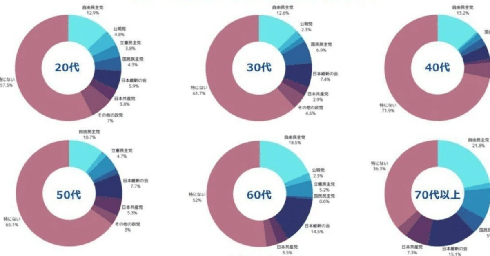

2月20日のnews zeroで、12月25日から1月5日にかけてPMIが実施した「政治に関する意識調査」に対する回答が取り上げられました。
https://news.ntv.co.jp/category/politics/035a716c4d0544c8b0d70597b0d20af7
引用されたのは、アンケートの自由記述に寄せられた、20代から30代の若者の声。「もっと一人一人の声に耳を傾けてほしい」「政治に対して意見をどこに届けたらいいかわからない」といった様々な意見が紹介されました。
news zero（2024.2.19）より引用
一方同番組は、政党支持率としてNNN・読売新聞が実施した世論調査を引用。『「支持政党なし」が52％』と紹介されています。
半数を超える「支持政党」なしですが、この内訳はどうなっているのでしょうか？年代によっても異なるのでしょうか？異なる調査にはなりますが、PMIが実施した「政治に関する意識調査」でも政党別の支持率について質問を行っていたため、今回はその年齢別データをお出しできればと思います。
「政治に関する意識調査」よりPMI作成
こちらのデータは、「普段から支持している政党はありますか？」との問いに対し、選択肢から選ぶ形で回答いただいた結果になります。
いずれの年代においても、政党の中では「自民党」と答える割合がもっとも多く、20代では12.9%が、もっとも多い70代では21.8%の方が自民党と答えています。
一方、いずれの年代においても、割合としてもっとも大きいのは「特にない」と答えた層で、20代では57.5%、30代では61.7％、そして意外にも40代がもっとも多く、71.9%となっています。その後、年齢を重ねるにつれて割合は減っていき、50代では65.1%、60代では52％、70代では36.3％まで減少します。
「政治に関する意識調査」よりPMI作成
このように、同じ質問項目であっても、年齢に応じて相当回答の傾向は異なることが分かります。
みなさんはこのグラフから何をお感じになられますでしょうか？何が要因だと思われますでしょうか？#ルールはつくれる変えられるのハッシュタグをつけて、みなさんのご意見をXにてお寄せください！
PMIでは、引き続き分析を続け、継続的に公表していきます。引き続きご注目いただけると幸いです。
お問い合わせ（メディア関係者の方）
テレビ・新聞等でデータの引用、ヒアリング等をご希望の場合は以下のフォームからお問い合わせください。
https://forms.gle/jspSuQvRUMZr5Uun6